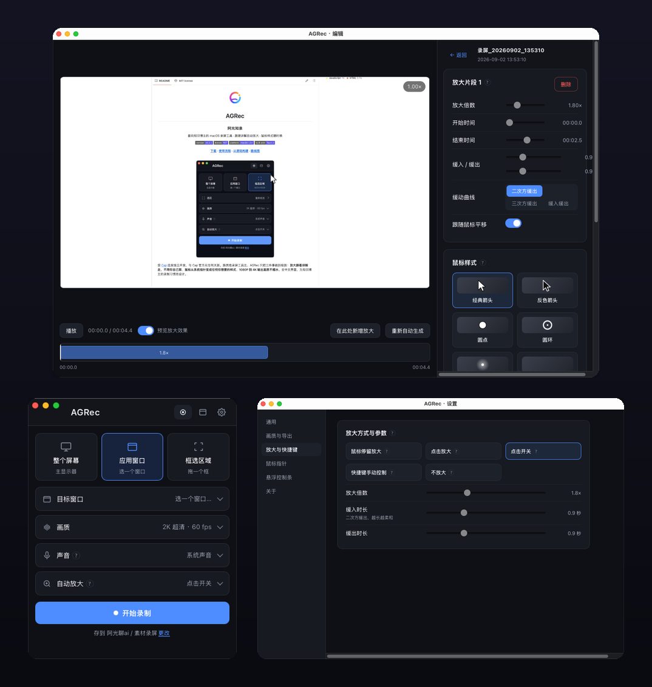
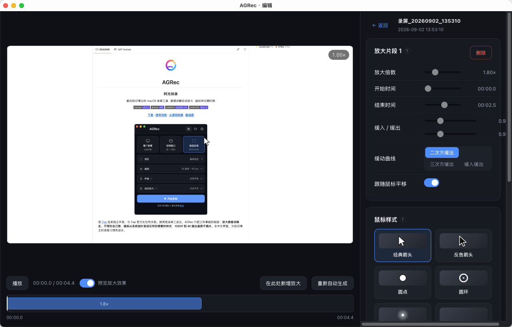
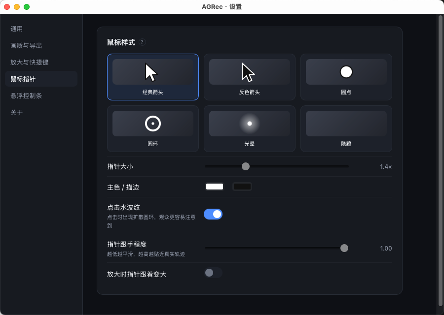
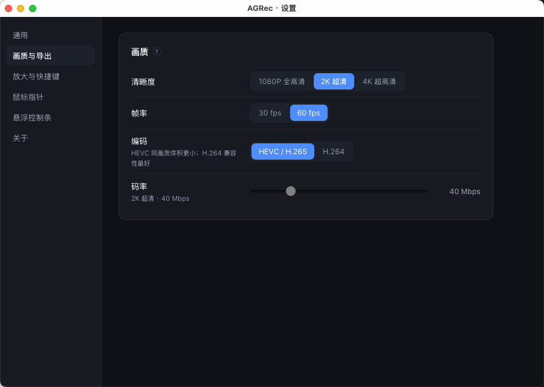
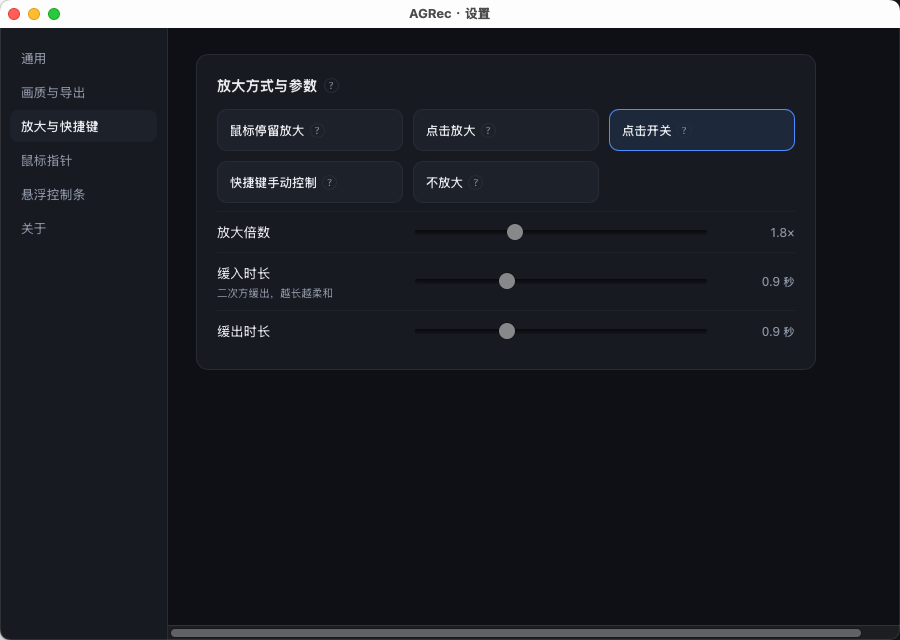
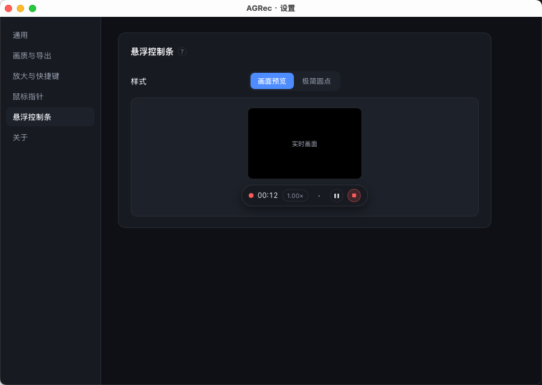

面向知识博主的 macOS 录屏工具。点一下、停一下，画面自动放大到你正在讲的地方——不用自己剪一刀。鼠标样式随时换，1080P 到 4K 画质不缩水。 A macOS screen recorder built for knowledge creators. Click or pause, and the frame zooms to what you're talking about — no manual editing. Swap the cursor for any style. 1080p to 4K, no detail lost.

左键点击、鼠标小范围停留都会触发放大，缓动、倍数、灵敏度全部可调，编辑器里还能逐段手动改。 A click or a brief pause both trigger a zoom. Easing, scale and sensitivity are all tunable, and every segment can be hand-edited afterward.
录制时不录系统指针，导出时按你选的样式重绘，放大后依然矢量级清晰，改样式不用重录。 The system pointer is never recorded — it's redrawn at export in your chosen style, staying crisp when zoomed, and you can restyle without re-recording.
放大不是滤镜近似，每一帧都按真实裁剪重采样，4K 源放大 2 倍画面依然锐利。 Zoom isn't a filter approximation — every frame is cropped and resampled from the source, so a 4K recording stays sharp even at 2x.





还没有付费的 Apple 开发者签名，系统会提示"无法验证开发者"，用一条命令放行即可，之后不会再提示： AGRec isn't signed with a paid Apple Developer ID yet, so macOS shows an "unidentified developer" warning. One command clears it — you won't see it again:
下载 .dmg，拖入「应用程序」Download the .dmg, drag it into Applications
跑一次上面那条命令，或在系统设置里点「仍要打开」Run the command above, or click "Open Anyway" in System Settings
授权屏幕录制权限，完全退出（⌘Q）后重新打开Grant Screen Recording permission, fully quit (⌘Q) and reopen